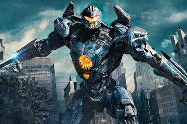

Marvel
Marvel Studios, LLC is an American film and television production company that is a subsidiary of Walt Disney Studios, a division of The Walt Disney Company. Marvel Studios is known for the production of the Marvel Cinematic Universe films, based on characters that appear in Marvel Comics publications.
DC
The DC Extended Universe is an American media franchise and shared universe centered on a series of superhero films based on characters that appeared in American comic books by DC Comics, produced by DC Films and distributed by Warner Bros. Pictures.
WB
Warner Bros. Entertainment Inc. is an American diversified multinational mass media and entertainment conglomerate headquartered at the Warner Bros. Studios complex in Burbank, California, and a subsidiary of AT&T's WarnerMedia through its Studios & Networks division

Fantasy Movies
Fantasy films are films that belong to the fantasy genre with fantastic themes, usually magic, supernatural events, mythology, folklore, or exotic fantasy worlds. The genre is considered a form of speculative fiction alongside science fiction films and horror films, although the genres do overlap.
Horror Movies
A horror film is one that seeks to elicit fear or disgust in its audience for entertainment purposes. Horror films additionally aim to evoke viewers' nightmares, revulsions and terror of the unknown or the macabre
Robbery Movies
The most basic of these is that films in the genre tend to follow the planning execution and aftermath of one large robbery. While there can be smaller crimes leading up to the major crime, this major crime is the centerpiece of the film and is the event which informs much of the film's plot.
Angelina jolie Movies
Angelina Jolie is an American actress and filmmaker. As a child, she made her screen debut in the comedy film Lookin' to Get Out (1982), acting alongside her father Jon Voight.
Animation Movies
Animation is a method in which figures are manipulated to appear as moving images. In traditional animation, images are drawn or painted by hand on transparent celluloid sheets to be photographed and exhibited on film
Action Movies
Action film is a film genre in which the protagonist or protagonists are thrust into a series of events that typically include violence, extended fighting, physical feats, rescues and frantic chases.
Mystery Movies
A mystery film is a genre of film that revolves around the solution of a problem or a crime. It focuses on the efforts of the detective, private investigator or amateur sleuth to solve the mysterious circumstances of an issue by means of clues, investigation, and clever deduction.

Sci-fi Movies
Science fiction (or sci-fi) is a film genre that uses speculative, fictional science-based depictions of phenomena that are not fully accepted by mainstream science, such as extraterrestrial lifeforms, spacecraft, robots, cyborgs, interstellar travel or other technologies.
Time travel Movies
The central premise for these stories often involves changing history, either intentionally or by accident, and the ways by which altering the past changes the future and creates an altered present or future for the time traveler upon their return home.[3][6] In other instances, the premise is that the past cannot be changed or that the future is predetermined, and the protagonist's actions turn out to be either inconsequential or intrinsic to events as they originally unfolded.